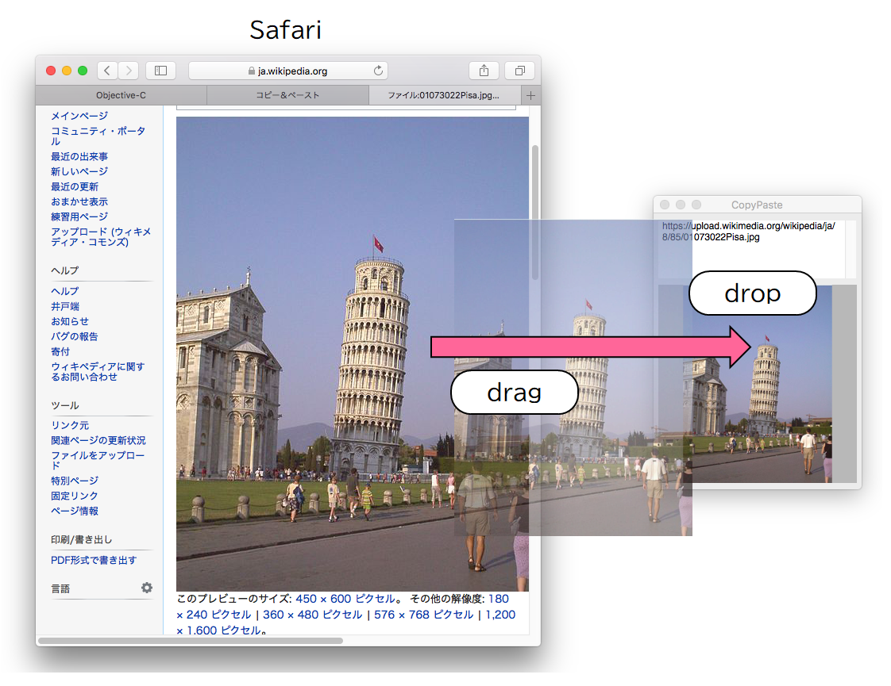

ドラッグ＆ドロップ
ビューに表示しているイメージをドラッグ＆ドロップして別のアプルケーションのビューに表示してみる
ドロップの目的地の処理（ドラッグしたイメージを表示する）
他のアプリケーションからドラッグしたイメージオブジェクトを本アプリケーションのビューにドロップすると、イメージがビューに表示される。
イメージがURLを持っていたらURLアドレスをテキストビューに表示する。
① イメージエディタ（Grab）に表示されている画像をドラッグし、本アプリのビュー上にドロップして画像を表示する。
② ブラウザ（Safari）に表示されている画像をドラッグし、本アプリのビュー上にドロップして画像を表示する。URLアドレスをテキストビューに表示する。

③ Finderの画像ファイル名（jpeg, png）をドラッグし、本アプリのビュー上にドロップして画像を表示する。URLアドレスをテキストビューに表示する。
アプリケーションの実装
ドラッグ＆ドロップによるオブジェクトの受け渡しは、コピー＆ペーストと同様に、ペーストボードを介して行われる。ペーストボードの種類は、dragingPasteboardオブジェクトである。
ドロップの目的地の処理は、NSDraggingDestinationプロトコルに準拠しているので、NSViewクラスのサブクラスに実装する。（インタフェース宣言でプロトコルの適用宣言をする必要はない）
(1) 受け入れオブジェクトの宣言
他のアプリケーションから受け入れ可能なオブジェクトの種類をUTIで指定する。
(2) デリゲートメソッドの実装
ドラッグ＆ドロップ操作に対するデリゲートメソッドがあらかじめ定義されている。各メソッドをオーバーライドすることにより、ドロップの目的地の処理を実装することができる。
イベントの種類とデリゲートメソッド名
① ドラッグによりオブジェクトがビューに入る
他のアプリケーションからドラッグされたオブジェクトが自身のビュー領域に入ったとき起動する。（戻り値を返すために必ず実行すること）
② ドラッグによりオブジェクトがビューを移動中
マウスの移動に伴いドラッグされたオブジェクトがビュー領域を移動しているときに連続的に起動する。
③ ドラッグによりオブジェクトがビューから出る
ドラッグされたオブジェクトが自身のビュー領域から出たときに起動する。
④ ドロップの準備
ドロップ操作の直後、ドロップの実行の前に起動する。前処理があれば実装する。
⑤ ドロップの実行
引数に、ドラッグされたオブジェクトを格納したペーストボードが渡るので、そこからイメージオブジェクトを読み込みビューに表示する。
イメージにURLオブジェクトが附属していれば、URLアドレスをテキストビューに表示する。（カテゴリのデリゲートメソッドにより実装する）
Finderのファイル名をドラッグされた場合、URLオブジェクトだけが読み込まれる。URLが画像ファイルであればイメージを読み込みビューに表示する。
ビューの再描画（drawRectのオーバーライド）
ビューに画像が収まるようをサイズの拡大/縮小を行う。
⑥ ドロップの完了
ドロップ操作により起動する。ドロップの後処理があれば記述する。
ドラッグの出発地の処理
表示中のイメージをドラッグし、別アプリケーションにドロップするまで
本アプリケーションが保持するイメージを別アプリケーションにドラッグしドロップする。別アプリケーションがドラッグ＆ドロップの目的地になる処理を実装をしていれば、オブジェクトはその仕様に従って取り扱われる。
① ビュー上のイメージをドラッグし、リッチテキストエディタ（テキストエディット）へドロップする。
② ビュー上のイメージとURLオブジェクトをドラッグし、Finderの特定のディレクトリへペーストする。ファイルのコピーと同じ。
アプリケーションの実装
ドラッグの出発地の処理は、NSViewクラスのサブクラスに実装し、NSDraggingSouceプロトコルに準拠しなくてはならない。インタフェース宣言でプロトコルの適用を宣言をする。
(1) ドラッグセッションの開始
mouseDownイベントのハンドラをオーバーライドする
ドラッグするオブジェクトをNSDraggingItemオブジェクトに格納し、ドラッグセッションを開始する。ドラッグイメージ（ドラッグのカーソルの移動とともに表示する小さな画像）を作成する。ここではイメージのの縮小版を表示する。
(2) デリゲートメソッドの実装
ドラッグ＆ドロップ操作に対するデリゲートメソッドがあらかじめ定義されている。各メソッドをオーバーライドすることにより、ドラッグの出発地の処理を実装することができる。
① オペレーションタイプの宣言
ドラッグセッション開始時に起動する。オペレーションタイプは、NSDragOperationCopyを指定する。このメソッドは必ず実装すること。
② ドラッグによりオブジェクトがビューを移動中
マウスの移動に伴いドラッグされたオブジェクトがビュー領域を移動しているときに連続的に起動する。
③ ドロップの完了
ドロップの目的地のアプリでドロップ操作が完了したときに起動される。ドロップの後処理があれば記述する。例えば、オペレーションタイプがオブジェクトの移動（NSDragOperationMove）であった場合、出発地が保持しているオブジェクトの削除はここで行う。
補足
本アプリは、ドラッグ＆ドロップの仕組みを説明するために、NSViewのカスタムクラスにプログラムを作成したものである。
NSImageViewクラスやNSTextViewクラスには、あらかじめコピー＆ペーストやドラッグ＆ドロップの処理が組み込まれているので、本アプリで説明した処理を組み込む必要はない。（どのような処理が組み込まれているかはクラスによって異なる）
ソースコード
AppDelegateクラス コピー＆ペースト処理
CPViewクラス コンテントビュー（コンテキストメニューを表示する）
UAViewクラス イメージを表示するビュー（ドラッグ＆ドロップ機能）
NSView+UAViewDelegate ドラッグ＆ドロップで使用するカテゴリ